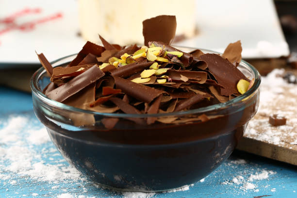

Supangle Tarifi İçin Malzemeler
- 1 litre süt
- 2 adet yumurta sarısı
- 6 yemek kaşığı toz şeker
- 3 tepeleme yemek kaşığı kakao
- 2 tepeleme yemek kaşığı un
- 2 yemek kaşığı nişasta
- 2 yemek kaşığı tereyağı
- 2 paket bitter çikolata (120 gr)
- Yarım su bardağı soğuk su (100 ml)
- Kakaolu kek
Supangle Tarifi Nasıl Yapılır?
- İlk olarak daha sonra kullanmak için suyumuzu buzdolabına kaldıralım ve soğutalım.
- Daha sonra uygun bir tencereye nişasta, un, toz şeker, kakao ve yumurta sarılarını alarak karıştıralım.
- Yavaş yavaş sütü ilave ederek pürüzsüz bir hal alıncaya kadar karıştıralım.
- Supanglemizi ocağa alalım ve karıştırarak koyulaşıp göz göz oluncaya kadar pişirelim.
- Kıvam alan supanglemizi ocaktan alalım, içerisine tereyağı ve çikolatamızı ekleyerek her ikisi de eriyene kadar karıştıralım.
- Son olarak buzdolabına kaldırdığımız suyu ilave edelim ve karıştıralım.
- Hazır olan supanglemizi soğuması için bir kenara alalım. Ara ara karıştırmayı unutmayalım.
- Tatlımızın tabanında kullanmak için kakaolu kekleri minik minik doğrayalım ve bir kaç parçasını kuplara yerleştirelim.
- Sonrasında supanglemizi kuplara paylaştıralım ve buzdolabına kaldırarak dinlenmeye bırakalım.
- Bir kaç saat sonrasında supanglelerimizi dolaptan alalım ve dilediğimiz şekilde süsleyerek servis edelim. Afiyet olsun!
Afiyet Olsun